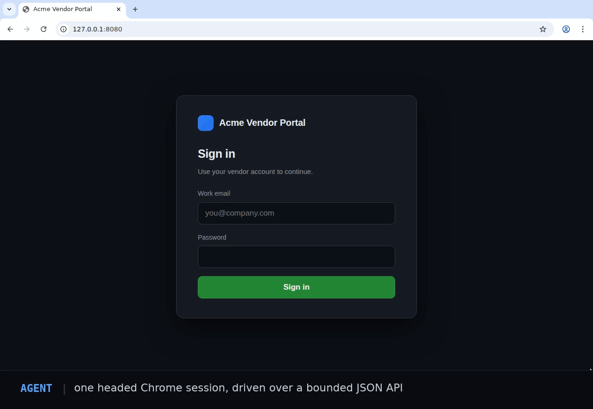

API control
Create, navigate, inspect, click, type, scroll, press, and end through closed request models.
See what your agent sees.
One headed Google Chrome session, on hardware you control. Your agent drives it through a small JSON API — or through MCP — while you watch the same session over noVNC and take over whenever you want.

Create, navigate, inspect, click, type, scroll, press, and end through closed request models.
Use bounded text and accessibility data before spending a vision step on a PNG snapshot.
Watch the exact headed session through numeric-loopback noVNC, with local human takeover.
Nine stdio tools from either client, so Claude Code, Claude Desktop, Cursor and Windsurf drive the session you are watching.
No shell, arbitrary JavaScript, raw DevTools, credential import, or wildcard listener.
# start the runtime
docker compose up --build
# check it is up
curl -fsS http://127.0.0.1:8092/browser/health
# then watch the live browser at
# http://127.0.0.1:6080/vnc.htmlnpm install aether-browser # TypeScript
pip install aether-browser # Python
# or from any MCP client
claude mcp add agent-browser -- npx -y aether-browser mcpRelease boundary: Agent Browser is self-hosted software, not a hosted browser service. The v0.x noVNC surface is unauthenticated and must remain on numeric loopback. Review the security model before changing the deployment shape.